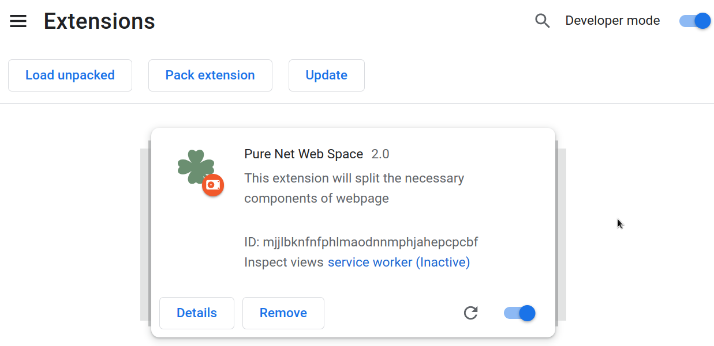
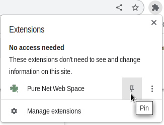
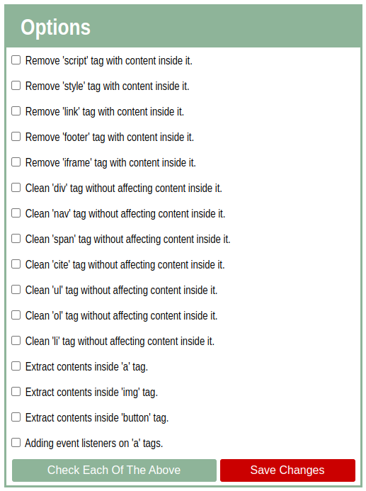
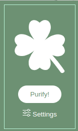

Getting Started
Step #1: Download
Click on the button to start downloading.
Step #2: Load an unpacked extension
The directory holding the manifest file can be added as an extension in developer mode in its current state. To load an unpacked extension in developer mode, follow these steps:
- Open the Extension Management page by navigating to the unpacked directory.
- Alternatively, open this page by clicking on the Extensions menu button and selecting Manage Extensions at the bottom of the menu.
- Alternatively, open this page by clicking on the Chrome menu, hovering over More Tools then selecting Extensions
- Enable Developer Mode by clicking the toggle switch next to Developer mode.
- Click the Load unpacked button and select the extension directory.
Step #3: Pin the Pure Net Chrome Extension
Click on Extensions, then on pin for Pure Net Chrome Extension

Step #4: Configure (optional)
There are two ways to configure or customize the filter,
- Right click on extension, then click on "Settings", then adjust the setting as per your need, finally press "Save Changes".
- Left click on extension, then click on "Options", then adjust the setting as per your need, finally press "Save Changes".
Step #5: Finally Activate it!
Just click on Purify! button to activate. You may can navigate to Chrome inspector > console to see whats happening, because the extension will log most of it's activities for confirmation and debugging purpose.